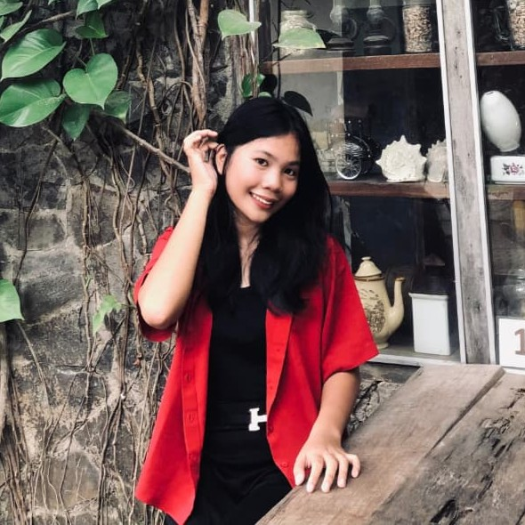
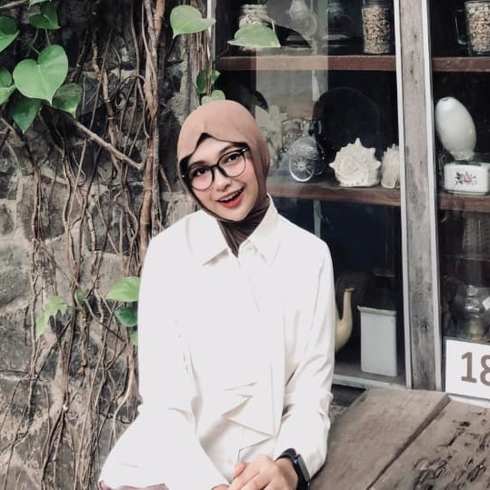

Mengenali Dirimu, Memahami Lingkungan, Menghadapi Tekanan Sosial
⌄
Pernah nggak sih kamu ngerasa harus ikut-ikutan teman, tren, atau
challenge biar nggak dibilang ketinggalan zaman? Atau bingung?
Kalau iya, kamu nggak sendiri
Banyak remaja Gen Z yang berjuang menemukan identitas mereka sambil
menghadapi tekanan sosial, norma kelompok, dan ekspektasi digital.
Isu yang Sering Dihadapi Gen Z
Ikut-ikutan Tren
Dorongan FOMO dari challenge, filter, dan budaya viral dapat
menggeser nilai pribadi.
Norma Kelompok
Tekanan teman membuat dirimu takut berbeda dan sulit menolak
ajakan yang tidak sesuai diri.
Ekspektasi Digital
Perbandingan sosial di media membuat standar diri jadi tidak
realistis dan melelahkan.
Kenapa GENZINE ?
1
Membantu kamu dalam Memahami pengaruh tren, budaya populer,
dan media digital terhadap persepsi diri.
2
Membantu kamu dalam Memahami pengaruh tren, budaya populer,
dan media digital terhadap persepsi diri.
3
Membekali kamu dengan strategi refleksi & kesadaran sosial
agar tetap autentik tanpa terisolasi.
Di dunia ini ada dua tipe orang
Tentukan Pilihanmu !
Orang yang berani menilai diri & siap menghadapi segala tantangan
✓
Orang yang hanya berdiam diri & hanya menunggu perubahan &
pertolongan orang lain
Sudah Saatnya Memulai Perjalananmu!
Jelajahi semua fitur yang tersedia dan temukan cara terbaik untuk
memahami dirimu, menghadapi tekanan sosial, dan menjadi versi terbaik
dari diri sendiri.
GENZINE
About Us
⌄
Generation Z Identity & Empowerment
GENZINE lahir dari keprihatinan terhadap fenomena remaja yang sering
terbawa arus sosial, tekanan teman & tren media digital. Di era
digital, remaja menghadapi tantangan dalam membangun identitas diri.
Banyak yang merasa harus menyesuaikan diri agar diterima, sering
membandingkan diri dengan orang lain, & rentan kehilangan arah.
Website ini hadir sebagai ruang reflektif dan edukatif yang memandu
remaja memahami dinamika sosial, belajar menavigasi tekanan
kelompok, dan menemukan cara membangun identitas yang autentik tanpa
harus mengorbankan diri.
Visi
Menumbuhkan generasi remaja yang kritis terhadap toleransi sosial,
sadar akan identitas diri, dan mampu membuat keputusan berdasarkan
nilai dan prinsip pribadi.
Misi
Memberikan platform dalam Memahami pengaruh tren, budaya populer,
dan media digital yang berpotensi mempengaruhi identitas diri.
1
Menghadirkan konten yang mendorong refleksi diri dan kesadaran
sosial
2
Membuat platform dengan strategi untuk menyeimbangkan hubungan
sosial tanpa kehilangan jati diri
3
Memberikan edukasi tentang pentingnya mempertahankan nilai-nilai
personal di tengah tekanan sosial
Meet Our Team

- Silvia Manao -
Ide Kreatif & Penulis Konten

- Maya Saira -
UI Designer
"
Genzine hadir sebagai solusi untuk membantu generasi muda dalam
menghadapi kompleksitas kehidupan digital. Kami percaya bahwa
dengan pemahaman diri yang baik dan metode yang tepat, setiap
orang dapat mengatasi tekanan sosial dan menjadi versi terbaik
dari diri mereka. Melalui konten interaktif, dan berbagai literasi
yang kami sebarkan berharap dapat menciptakan dampak positif bagi
perkembangan mental dan emosional generasi muda Indonesia.
"
GENZINE
Temukan Berbagai Fitur yang Membantumu Dalam Mengeksplor Dirimu
Apa yang Kami Sediakan?
GENZINE menyediakan berbagai fitur edukatif dan interaktif yang
membantu kamu dalam proses pengenalan diri, menghadapi tekanan
sosial, dan membangun identitas yang autentik.
GenZopedia
Genzopedia memberi kamu akses untuk membaca dan memahami berbagai
literasi mengenai berbagai isu sosial yang sedang dihadapi oleh
Gen Z dan memberikan pencerahan yang bisa membantu mengatasi
masalah pada dirimu.
Conformometer
Conformometer merupakan kuis reflektif berbasis The Conformity
Scale (TCS) yang sudah banyak digunakan dalam penelitian psikologi
sosial. Kuis ini terdiri dari 12 pertanyaan yang menggambarkan
situasi nyata sehari-hari, seperti cara berpendapat di kelompok,
mengikuti tren, hingga memilih jurusan atau aktivitas karena
pengaruh teman.
BeYou
Fitur ini tuh kayak sahabat kecil yang nemenin kamu setiap kali
baca pernyataan. Jadi, begitu kamu pencet tombolnya, langsung
muncul respon yang nyemangatin, tips praktis, latihan singkat,
sampai pengingat yang bisa bikin kamu mikir, “Oh iya juga ya!” .
Gak cuma sekadar baca doang, tapi kamu diajak buat ngerasain,
nyoba, dan refleksi sebentar.
GENZOPEDIA
Literasi dan Pengetahuan untuk Generasi Z
Genzopedia
Jelajahi berbagai literasi yang membantu kamu memahami diri dan
lingkungan sosial.
Konformitas Sosial di Era Digital: Dampak dan Strategi bagi Remaja
Konformitas sosial bukan sekadar ikut-ikutan. Ada teori, ada
faktor pendorong, ada dampak positif & negatif, dan semuanya nyata
banget di kehidupan remaja sekarang.
Pengertian Identitas Diri dan Pentingnya di Masa Remaja
Identitas diri itu sebenernya “siapa gue, apa yang gue pegang, dan
gimana gue ngelihat diri sendiri”. Bukan cuma soal nama, umur,
atau hobi, tapi juga soal nilai, prinsip, keyakinan, dan cara kita
menempatkan diri di lingkungan.
Strategi Membangun Identitas Autentik: Refleksi, Kesadaran, dan
Penerimaan Diri
Setelah kita sadar kalau era digital itu kadang bikin kita gampang
kebingungan sama siapa diri kita, sekarang waktunya belajar bangun
identitas yang asli.
Erikson percaya kalau hidup manusia itu kayak perjalanan panjang
yang terbagi jadi beberapa tahap. Di setiap tahap ada yang namanya
“krisis” atau tugas perkembangan yang harus kita hadapi.
Ngulik Fase “Identity vs Role Confusion”: Kenapa Remaja Sering
Ngerasa “Aku Ini Siapa, Sih?”
Erikson nyebut fase ini sebagai inti perjalanan remaja. Bukan cuma
soal milih jurusan atau kerjaan, tapi juga nilai yang kamu pegang,
cara kamu berelasi sama orang lain, sampai gaya hidup yang kamu
anggap “gue banget.”
Relevansi Teori Erikson terhadap Fenomena Konformitas di Era
Digital
Media sosial itu bikin remaja mudah banget membandingkan diri sama
orang lain. Mereka sering mencoba berbagai “topeng digital” untuk
lihat mana yang diterima teman atau follower. Kalau identitas asli
belum kuat, remaja cenderung ikut arus, alias konformitas, supaya
tetap diterima.
Jadi gini, menurut Erikson, remaja itu lagi di fase “siapa gue
sebenernya?” alias Identity vs Role Confusion. Nah, di fase ini
wajar banget kalau kadang bingung, gampang ikut-ikutan teman, atau
kepengaruh tren di medsos. Tapi tenang, ada beberapa cara buat
ngelewatin fase ini dengan oke.
Tujuan fitur ini simpel banget: biar kamu merasa ditemenin, dihargai,
dan dikasih semangat buat tetap jadi diri sendiri. Selain itu, fitur
ini juga ngajarin kalau pilihan non-konformitas itu sah-sah aja,
selama bikin kamu berkembang. Jadi tiap kali pencet tombol, kamu bukan
cuma dapet kata-kata motivasi, tapi juga trik kecil yang bisa langsung
dipraktikin di kehidupan sehari-hari
Konformitas▼
Konformitas adalah kecenderungan untuk menyesuaikan perilaku,
pendapat, atau sikap dengan norma kelompok atau tekanan sosial.
6
Pertanyaan
🎯
Fokus Evaluasi
Pertanyaan 1▼
Aku sering suka-sukaan gaya berpakaian teman-teman supaya tidak
dikucilkan
📝 Respon & Tips
Wajar banget kalau kamu gak mau merasa sendirian. Tapi coba
dipikir deh... kamuu pikir orang respect kamu karena outfit
kamu mirip mereka? Nggak. Mereka bahkan nggak peduli. Besok
trennya berubah, kamu ikut lagi, terus begitu sampai tua.
Endingnya? Identitas kamu hilang, isi dompet pun ikut habis.
🎯 Coba latihan ini
Mulai dari hal kecil aja, misalnya pilih warna atau aksesoris
favorit kamu sendiri!
Ingat ini ya: beda itu bukan salah. Justru itu yang bikin kamu
terlihat unik dan
lebih berharga.
Pertanyaan 2▼
Aku suka pura-pura setuju sama pendapat teman-teman biar gak
dikira sok pinter.
📝 Respon & Tips
Hei, kamu gak sendiri kok 🤗. Banyak banget yang ngalamin hal
serupa. Kadang memang lebih gampang ikut angguk-angguk aja
daripada jadi satu-satunya yang beda. Tapi coba bayangin…
kalau kamu terus pura-pura setuju, kapan kamu bisa nunjukin
pendapat asli kamu sendiri?
🎯 Coba deh latihan ini
Pas kamu gak sepenuhnya setuju, coba bilang: 🗣️ “Wah, pendapat
kamu bagus banget. Tapi boleh gak aku share pandanganku juga?”
Ingat ini ya: pendapat kamu itu
berharga dan layak didengar.
Kamu gak harus berdebat. Cukup buka ruang ngobrol. Dan tahu
gak? Saat kamu berani bersuara, itu bukan cuma keren, tapi
juga bentuk kamu menghargai dirimu sendiri ❤️.
Pertanyaan 3▼
Aku pura-pura suka sama hal yang sebenarnya aku gak minat, biar
bisa nyambung sama teman-teman.
📝 Respon & Tips
Aduh, ini sering banget kejadian ya 😣. Rasanya kayak,
‘Daripada gak nyambung, pura-pura aja deh…’ Tapi tahu gak?
Pertemanan sejati itu gak cuma nyambung karena hobi atau minat
yang sama, tapi karena kita saling nerima apa adanya.
🎯 Coba deh latihan ini
Kalau topiknya bukan minatmu, coba bilang: 🗣️ “Maaf ya aku
kurang tertarik, tapi boleh dong kalian ceritain? Siapa tahu
aku jadi penasaran.”
Ingat ini ya: kamu gak perlu
berpura-pura dan layak
didengar. Kamu gak harus berdebat. Cukup buka ruang ngobrol.
Dan tahu gak? Saat kamu berani bersuara, itu bukan cuma keren,
tapi juga bentuk kamu menghargai dirimu sendiri ❤️.
Pertanyaan 4▼
Waktu semua teman-teman cabut kelas bimbel, aku ikut juga,
padahal aku pengen belajar.
📝 Respon & Tips
Aduhh, rumit banget ya 😞. Kalau gak ikut, takut dibilang gak
solid. Tapi coba pikirin sebentar… kalau kamu ketinggalan
materi, apa mereka yang bakal tanggung jawab nilai kamu turun?
Kalau teman-teman kamu gak hebat, tidak perlu ikuti mereka
dong.
🎯 Coba deh latihan ini
Lain kali, kamu bisa bilang: 🗣️ “Aku gak bisa ikut cabut, aku
mau fokus belajar buat ngejar PTN impianku. Nanti kalau ada
waktu luang, kita main bareng ya.”
Ingat ini ya: berani bilang nggak itu bukan berarti
cupu. Itu langkah pertama buat
jaga masa depanmu. Semangat terus 💪 aku yakin kamu bisaaa!
Pertanyaan 5▼
Di sebuah grup, semua orang ngehina guru lewat stiker & meme,
dan aku ikut-ikutan kirim juga.
📝 Respon & Tips
Kamu ikut-ikutan hina guru lewat stiker & meme? Fakta, itu
mental budak level dewa. Kamu pikir dengan ngehina orang yang
ngajarin kamu, hidup kamu bakal naik kelas? Enggak. Yang ada
kamu makin turun derajat, udah jadi budak tren, budak
validasi, bahkan jadi mental berandalan sama teman-teman kamu
yang norak itu.
🎯 Coba deh latihan ini
Kalau kamu gak nyaman buat langsung speak up, cukup pilih buat
diem. Stay silent aja udah bentuk keberanian 💪. Atau, bisa
juga alihin obrolan ke topik yang lebih berguna, misalnya: “Eh
guys, tadi soal ini kalian ngerti gak?”
Ingat ini: respect itu bukan soal takut sama guru. Tapi
tentang tahu kapan harus diam dan kapan harus bijak. Dan itu
bikin kamu beda dari yang lain 🙌
Pertanyaan 6▼
Aku nyontek waktu ulangan karena semua teman di sekitar aku juga
nyontek, jadi aku takut nilai aku paling jelek sendiri.
📝 Respon & Tips
Nyontek itu bukan strategi untuk dapat nilai bagus, tapi itu
kelakuan orang yang ternyata bermental kambing. Kamu takut
jadi paling jelek, makanya ikut arus. Selamat, kamu resmi jadi
manusia bermental budak.
🎯 Coba deh latihan ini
Lain kali kalau kamu dalam posisi yang sama, kamu bisa bilang:
🗣️ “Maaf ya, aku mau fokus kerjain sendiri dulu. Aku lagi
nyoba bener-bener belajar karena pengen ngerti materinya.”
Ingat ini ya: Gagal karena usaha itu
proses. Tapi berhasil karena
curang? Itu bukan keberhasilan. Kamu pantas punya nilai yang
murni, dengan usaha mu sendiri, itu termasuk bentuk kamu yakin
dengan kemampuan dirimu. Pahami ini baik-baik, lebih baik kamu
ranking buntut tapi ngerti dasar, daripada ranking 1 hasil
nyontek tapi isinya kosong. Ranking buntut masih bisa naik
kalau belajar skill, tapi ranking 1 palsu akan hancur pas
masuk dunia nyata.
Non-Konformitas▼
Non-konformitas adalah kecenderungan untuk tidak mengikuti norma
kelompok dan memilih jalan sendiri.
6
Pertanyaan
🎭
Fokus Individualitas
Pertanyaan 7▼
Aku tetap duduk sama teman yang sering dijauhi, walau banyak
yang bilang aku aneh.
📝 Respon & Tips
Nah, ini baru tanda ada nyali. Kamu tahu banyak yang ngejauhin
orang itu, tapi kamu tetap duduk sama dia. Itu artinya kamu
punya independensi pikiran—nggak semua orang bisa. Kebanyakan
orang cuma bermental kambing: ikut mayoritas biar aman. Kamu
mungkin dianggap "beda", tapi justru karena itu kamu nunjukin
keberanian dan hati besar 💖. Dan tahu gak? Buat temanmu,
kehadiranmu bisa berarti bangett🌍✨
🎯 Coba deh latihan ini
Kalau ada yang komentar aneh tentang pilihanmu, kamu bisa
jawab: 🗣️ “Kita gak pernah tahu cerita orang lain, jadi aku
pilih buat temenan tanpa nge-judge.”
Ingat ini ya: Ikut-ikutan menjauh itu
gampang. Tapi tetap ada buat
orang lain? Itu yang jarang banget orang bisa lakukan.
Pertanyaan 8▼
Aku tetap tampil dengan gaya aku sendiri ke sekolah, walau gak
sesuai tren yang lagi hype.
📝 Respon & Tips
Itu sikap yang perlu mendapat respect. Kamu ngerti satu hal
penting: tren itu kayak ombak, lewat bentar terus hilang.
Kalau kamu hidup ngejar tren, kamu bakal terus kejar-kejaran
sama sesuatu yang nggak pernah selesai. Duit habis, identitas
hilang, hasilnya nihil.
🎯 Coba deh latihan ini
Kalau ada yang nyeletuk soal gaya kamu, kamu bisa bilang: 🗣️
“Aku lebih nyaman kayak gini. Yang penting aku pede dan jadi
diri sendiri.”
Ingat ini ya: tren bakal cepat lewat… tapi keunikan kamu
justru yang bikin kamu diingat.
Pertanyaan 9▼
Aku tetap bawa bekal makan siang dari rumah walau diejek
teman-teman karena gak beli di kantin.
📝 Respon & Tips
Kamu hebat! 💪 Kamu tahu apa yang terbaik buat diri kamu, dan
gak gampang goyah cuma karena omongan orang.
🎯 Coba deh latihan ini
Variasiin menu biar makin seru. Jawab ejekan dengan candaan:
“Ini buatan chef spesial di rumah dan jangan lupa sehat +
hemat = pilihan cerdas ✨
Ingat ini ya: Awalnya diejek, lama-lama mereka bisa malah
ikut-ikutan kamu
Pertanyaan 10▼
Aku tetap masuk ekskul yang aku suka walau dibilang gak populer
dan kurang keren.
📝 Respon & Tips
Pas teman-teman bilang ekskulmu gak populer, wajar banget
kalau kamu sempat mikir, “Apa aku salah pilih ya?” Tapi coba
bayangin ini deh… Ekskul itu bukan tentang keliatan keren di
mata orang lain, tapi tentang tempat kamu bisa tumbuh dan jadi
diri sendiri 🌱. Justru di sana kamu punya ruang buat belajar
hal yang orang lain belum tentu bisa. Biasanya orang yang ikut
tren ekskul populer biasanya cuma dapet gengsi sementara.
Begitu lulus, habis. Sementara orang yang serius ngulik bidang
yang dianggap “kurang keren” bisa punya edge — keahlian yang
jarang dimiliki orang lain. Di dunia nyata, yang langka itu
lebih mahal.
🎯 Coba deh latihan ini
Lain kali kalau ada yang komentar soal ekskulmu, kamu bisa
bilang: 🗣️ “Aku nyaman di sini kok, aku pengen berkembang
lewat hal yang aku suka.” lalu kamu buktiin dengan prestasi
kamu di ekskul itu.
Ingat ini ya: ekskul yang sekarang dianggap biasa aja, bisa
jadi pintu menuju masa depan besar kamu.
Pertanyaan 11▼
Aku tetap duduk di depan kelas meskipun teman-teman ngajak
pindah ke belakang supaya di belakang bisa lebih berisik.
📝 Respon & Tips
Mantap. Itu keputusan kecil tapi mindset besar. Kamu pilih
duduk depan artinya kamu milih fokus, bukan distraksi. Yang di
belakang cuma cari hiburan, yang di depan cari hasil. Dunia
ini nggak ngasih hadiah ke yang paling rame, tapi ke yang
paling kompeten.
🎯 Coba deh latihan ini
Kalau ada yang ngajak pindah, kamu bisa bilang: 🗣️ “Aku lebih
enak nyimak di depan. Tenang aja, pas istirahat kita tetap
bareng kok.”
Ingat ini ya: beda posisi duduk bisa bikin beda hasil belajar.
Dan kamu sudah milih tempat yang bikin kamu berkembang.
Pertanyaan 12▼
Aku tetap bawa buku harian dan nulis tangan meskipun teman-teman
bilang itu kuno dan gak jaman.
📝 Respon & Tips
Wah, itu keren banget! Banyak orang sekarang nyerahin semua ke
layar, tapi kamu justru punya keberanian buat tetap jujur
lewat tulisan tangan. Nulis di buku harian itu bukan kuno,
tapi cara paling tulus buat ngobrol sama diri sendiri 📝💖.
🎯 Coba deh latihan ini
Kalau ada yang komentar, kamu bisa jawab: 🗣️ “Aku lebih lega
kalau nulis tangan. Rasanya beda, lebih nyata.”
Ingat ini ya: teknologi bisa berubah, tapi isi hati kamu
selalu butuh tempat yang asli
Tes Tendensi Konformitas - Ukur seberapa jauh kamu ikut arus sosial
Zona Hasil:
Authentic Self (Hijau) – Kamu lebih mandiri,
punya pendirian, dan tidak mudah terbawa arus.
Seekers (Kuning) – Kamu kadang masih mencari jati
diri dan menyesuaikan diri dengan kelompok.
Conformers (Merah) – Kamu cenderung ikut arus
tanpa banyak refleksi, penting untuk belajar mengenali diri lebih
dalam.
🎯 Tujuan Fitur: Memberikan pemahaman awal tentang
tingkat konformitas sosial seseorang melalui kuis berbasis skoring.
Hasilnya diklasifikasikan dalam tiga zona untuk memandu pengguna
merefleksikan diri, memahami pengaruh sosial, dan mencari cara menjadi
lebih autentik.
📖 Deskripsi Fitur: Conformometer merupakan kuis
reflektif berbasis The Conformity Scale (TCS) yang sudah banyak
digunakan dalam penelitian psikologi sosial. Kuis ini terdiri dari 12
pertanyaan yang menggambarkan situasi nyata sehari-hari, seperti cara
berpendapat di kelompok, mengikuti tren, hingga memilih jurusan atau
aktivitas karena pengaruh teman.
Jawabanmu akan dihitung dengan sistem skoring Likert scale (1 = sangat
tidak setuju hingga 5 = sangat setuju), lalu dikategorikan dalam tiga
zona: Authentic Self, Seekers, atau Conformers. Hasil ini memberi
gambaran awal tentang bagaimana kamu menempatkan diri dalam dinamika
sosial remaja.